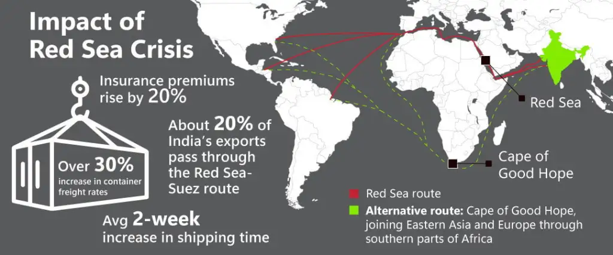

For years, global supply chains were built on one fragile assumption: the fastest route will always be available.
The Red Sea crisis proved how dangerous that assumption was. Almost overnight, one of the world’s most critical maritime corridors became a high-risk zone. Containers kept moving, but the logic behind global operations stopped working the way businesses expected.
When the Red Sea and Suez route became unsafe, shipping lines diverted vessels around the Cape of Good Hope. This was not a minor adjustment. It fundamentally changed cost structures, transit times, and delivery reliability across industries.
Transit times increased by roughly two weeks. Container freight rates rose sharply. Marine insurance premiums increased due to heightened risk. For India alone, nearly one-fifth of exports passing through this corridor were directly impacted.
The real problem was not delay. It was the loss of predictability.
Factories could not plan production accurately. Inventory planners lost confidence in forecasts. Customer commitments became harder to honor. Supply chains did not collapse; they became uncertain, and uncertainty is operationally expensive.
Unlike pandemics or port congestion, this crisis did not stop trade. Goods continued to flow, but at uneven speeds and unpredictable intervals. Just-in-time models failed. Over-optimized networks were exposed.
The organizations that adapted best were not the largest or most automated. They were the ones with visibility into their flows and flexibility built into their network design.
The Red Sea crisis will not be remembered only as a geopolitical event. It will be remembered as a stress test that many supply chains failed.
If one route disruption can destabilize your operations, the issue is not the crisis. It is the design.